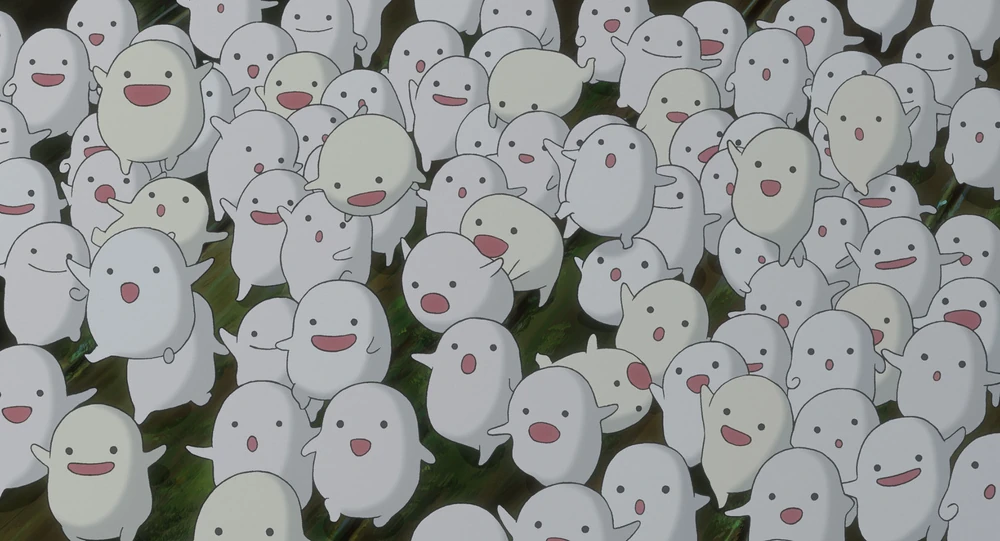

Studio Ghibli Characters Gallery
Explore mystical little creatures across Studio Ghibli world

Boh & Yu-Bird
Universe: Spirited Away
Role: Bathhouse Runaways / Companions
Species: Transformed Giant Baby & Fly
Yubaba's pampered child turned into a tiny mouse alongside the harpy minion transformed into a miniature fly.
View Details
Calcifer
Universe: Howl's Moving Castle
Role: Castle Engine / Hearth Keeper
Species: Fire Demon
A sarcastic fallen star bound to Howl who heats the water, moves the giant castle, and loves fried eggs and bacon.
View Details
Chu & Chibi Totoro
Universe: My Neighbor Totoro
Role: Forest Keepers / Acorn Gatherers
Species: Forest Spirits
The medium blue and small white companions of Big Totoro who scurry through underbrush dropping magic acorns.
View Details
Otori-sama
Universe: Spirited Away
Role: Bathhouse Guests
Species: Duck Spirits
Plump, giant chick-like deities who visit Yubaba's bathhouse to soak peacefully in warm herbal waters with leaves atop their heads.
View Details
Susuwatari (Soot Sprites)
Universe: My Neighbor Totoro & Spirited Away
Role: Boiler Room Workers / House Spirits
Species: Spirit (Soot Yokai)
Small fuzzy balls of pure soot who love star candy (Kompeito) and carry coal in Kamaji's boiler room.
View Details
Warawara
Universe: The Boy and the Heron
Role: Unborn Human Souls
Species: Spirit Entities
Floating, bubble-like spirits in the underworld that inflate and float upward toward the sky to be born into the real world.
View Details